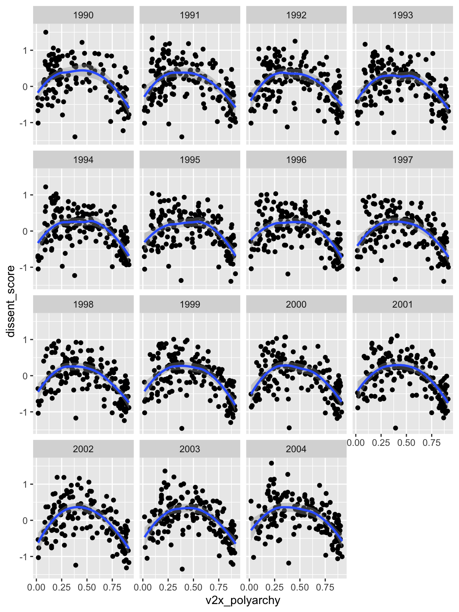

# load packages
library(tidyverse)
# download latest vdem data
remotes::install_github("xmarquez/democracyData")
vdem <- democracyData::vdem_simple %>%
select(year, ccode = vdem_cowcode, v2x_polyarchy) %>%
glimpse()Rows: 27,555
Columns: 3
$ year <dbl> 1789, 1790, 1791, 1792, 1793, 1794, 1795, 1796, 1797, 17…
$ ccode <dbl> 70, 70, 70, 70, 70, 70, 70, 70, 70, 70, 70, 70, 70, 70, …
$ v2x_polyarchy <dbl> 0.028, 0.028, 0.028, 0.028, 0.028, 0.028, 0.028, 0.028, …# download latest version of dissent scores
gh_url <- "https://raw.githubusercontent.com/carlislerainey/dissent-scores/main/output/dissent-scores.csv"
dissent_scores <- read_csv(gh_url) |>
glimpse()Rows: 2,775
Columns: 13
$ release <chr> "V0.0.9999", "V0.0.9999", "V0.0.9999", "V0.0.9999"…
$ release_date <date> 2023-09-13, 2023-09-13, 2023-09-13, 2023-09-13, 2…
$ country_name <chr> "United States", "United States", "United States",…
$ ccode <dbl> 2, 2, 2, 2, 2, 2, 2, 2, 2, 2, 2, 2, 2, 2, 2, 20, 2…
$ stateabb <chr> "USA", "USA", "USA", "USA", "USA", "USA", "USA", "…
$ year <dbl> 1990, 1991, 1992, 1993, 1994, 1995, 1996, 1997, 19…
$ n_events <dbl> 135537, 140735, 151180, 177717, 194368, 195981, 20…
$ n_dissent_events <dbl> 118, 109, 124, 138, 127, 117, 123, 130, 147, 121, …
$ frac_dissent_events <dbl> 0.0008706110, 0.0007745053, 0.0008202143, 0.000776…
$ avg_pi <dbl> 0.0008690543, 0.0007750752, 0.0008211722, 0.000779…
$ avg_eta <dbl> -7.051493, -7.166315, -7.107983, -7.160229, -7.331…
$ dissent_score <dbl> -0.62807636, -0.67911036, -0.65318394, -0.67640508…
$ se_dissent_score <dbl> 0.04107096, 0.04241524, 0.03997557, 0.03736980, 0.…# join the two by ccode and year
joined <- left_join(dissent_scores, vdem) |>
glimpse()Rows: 2,775
Columns: 14
$ release <chr> "V0.0.9999", "V0.0.9999", "V0.0.9999", "V0.0.9999"…
$ release_date <date> 2023-09-13, 2023-09-13, 2023-09-13, 2023-09-13, 2…
$ country_name <chr> "United States", "United States", "United States",…
$ ccode <dbl> 2, 2, 2, 2, 2, 2, 2, 2, 2, 2, 2, 2, 2, 2, 2, 20, 2…
$ stateabb <chr> "USA", "USA", "USA", "USA", "USA", "USA", "USA", "…
$ year <dbl> 1990, 1991, 1992, 1993, 1994, 1995, 1996, 1997, 19…
$ n_events <dbl> 135537, 140735, 151180, 177717, 194368, 195981, 20…
$ n_dissent_events <dbl> 118, 109, 124, 138, 127, 117, 123, 130, 147, 121, …
$ frac_dissent_events <dbl> 0.0008706110, 0.0007745053, 0.0008202143, 0.000776…
$ avg_pi <dbl> 0.0008690543, 0.0007750752, 0.0008211722, 0.000779…
$ avg_eta <dbl> -7.051493, -7.166315, -7.107983, -7.160229, -7.331…
$ dissent_score <dbl> -0.62807636, -0.67911036, -0.65318394, -0.67640508…
$ se_dissent_score <dbl> 0.04107096, 0.04241524, 0.03997557, 0.03736980, 0.…
$ v2x_polyarchy <dbl> 0.866, 0.866, 0.871, 0.872, 0.872, 0.872, 0.872, 0…# plot the relationship between electoral democracy index and dissent scores
ggplot(joined, aes(x = v2x_polyarchy, y = dissent_score)) +
geom_point() +
geom_smooth()